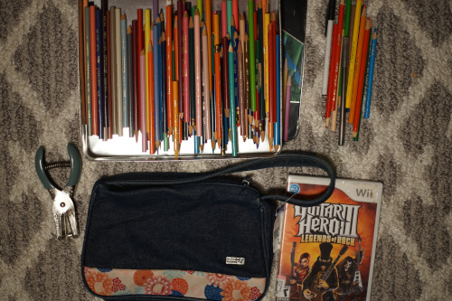

I hope you all had a wonderful first Christmas, New Years, and second Christmas! The holidays are really all over now...
We did our annual New Year's party and I spent it with Kohi drawing in the Gamer Zone while the boys played bideo games. It's very fun to draw together!! Where's all my local drawers???
I ended the year with a request from my manager, who I unfortunately did not draw for secret santa: "nude Grushim [Grusha] with 2 gay cats kissing on him". I began the year with a Verona!

Kohi and I went shopping together more and we bought even more stuff. Girls Be Shopping!!! I officially have "way too many fr*ckin colored pencils".
All non prismacolors are sorted to the side. Some are verithin.
For Ryan
I looked into this Guitar Hero 3 for the track list and found out there's a version that has mono audio and a renewal fixed version with the promised Dolby Pro Logic II and stereo. I couldn't find very much about how to tell which version a disc is, but I eventually found on eBay there are discs that do not have the Dolby stamp on them. I'm surprised there's no video game fanatics tracking down the mono version for their ultimate Guitar Hero collection.
hors sent me a wonderful christmas gift!!! I had to wait so long to open them ;u; It was good timing to open it then after spending too long in a car.

One of the highlights is a horse named Gherkin?? What the heck goes on in Bella Sara world?! Maybe GHERKIN deserves a toploader too.
She found me a Nina Ichihara minicchu!! I bought one of these and pulled Mika, my not-yet-favorite, and gave it to Ryan since he had Rika. Big regrets... Nina has been my favorite for longer than anyone else now so I'm very happy to have her!!
She included 2 pairs of Lepus eye. One pair is 14mm and the other is 18mm. The 14mm pair fits Cheby as well and he looks scary XD I'll have to take some photos of him in them later. The 18mm pair is half blue half green on each eye. They're not actually odd eyes at all!

The constricted pupils have led me to put my little Hina in increasingly distressed positions.


She doesn't need to worry about men anyway because it will be me who marries her.